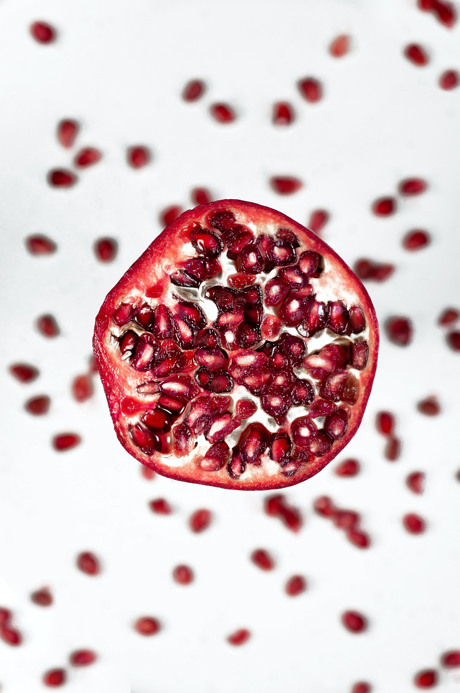

About Pomegranates
Pomegranates are delicious and nutritious fruits known for their unique sweet-tart flavor and vibrant ruby-red seeds. They are rich in antioxidants and vitamins and are used in a variety of dishes, juices, and snacks. Pomegranates have a long history and cultural significance in many regions.
Steps to Grow Pomegranates
- Choose a sunny location with well-drained soil for pomegranate cultivation.
- Plant pomegranate trees in the spring or fall, ensuring proper spacing between trees.
- Water the trees regularly, especially during the dry season, to keep the soil consistently moist.
- Prune pomegranate trees to maintain their shape and promote fruit production.
- Protect the trees from pests and diseases through regular monitoring and treatment.
- Harvest pomegranates when they are ripe, usually in the fall, by picking the fruits from the tree.
Extra Information
Pomegranates are not only tasty but also known for their health benefits. They are often associated with vitality and longevity. Pomegranate juice is consumed for its potential antioxidant and anti-inflammatory properties.